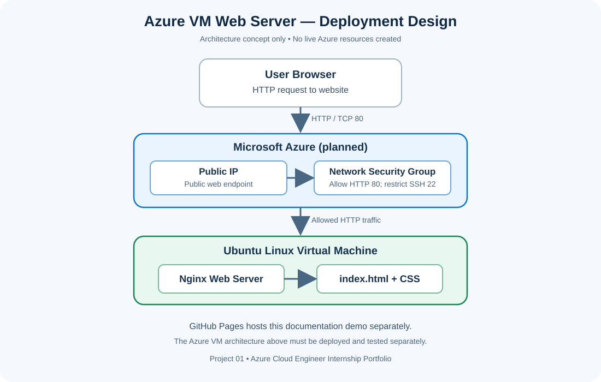

Project Overview
This project demonstrates the planned workflow for deploying a Linux web server in Microsoft Azure. The design uses an Ubuntu virtual machine, Nginx to serve static files, a public IP address for web access, and a Network Security Group (NSG) to control inbound traffic.
Compute
Ubuntu Linux virtual machine for hosting the web server.
Networking
Virtual Network, subnet, public IP and controlled HTTP access.
Security
SSH restricted to the administrator's IP; HTTP opened for the demo website.
Validation
Planned checks for Nginx service status and HTTP response.
Architecture Diagram
The diagram describes the intended Azure setup. It is not evidence of a live Azure deployment.

Skills Demonstrated
Azure Virtual Machines and Ubuntu Linux basics.
Virtual Network, subnet, public IP and NSG inbound rules.
Package installation, service management and file permissions.
Nginx installation, configuration checks and HTTP testing.
Architecture diagrams, setup instructions and validation checklist.
Version-controlled project files and a public portfolio page.
Planned Azure Deployment Steps
- Create a dedicated Azure Resource Group.
- Create an Ubuntu Linux virtual machine and SSH key.
- Configure the network security group: allow HTTP TCP/80 for the public demo and restrict SSH TCP/22 to the administrator's IP.
- Connect to the VM over SSH and update the Ubuntu packages.
- Install Nginx and verify the service is running.
- Place the website files in
/var/www/html/. - Test the website using the VM's public IP address.
- Record screenshots and clean up the Azure resources after testing to avoid unwanted charges.
Status: Design and portfolio documentation prepared. Live Azure deployment: not yet performed.
Validation Checklist
- ☐ VM is running (after actual deployment)
- ☐ Nginx service reports
active (running) - ☐ HTTP test returns
200 OK - ☐ NSG allows only required inbound traffic
- ☐ Screenshots and real deployment evidence are added after implementation